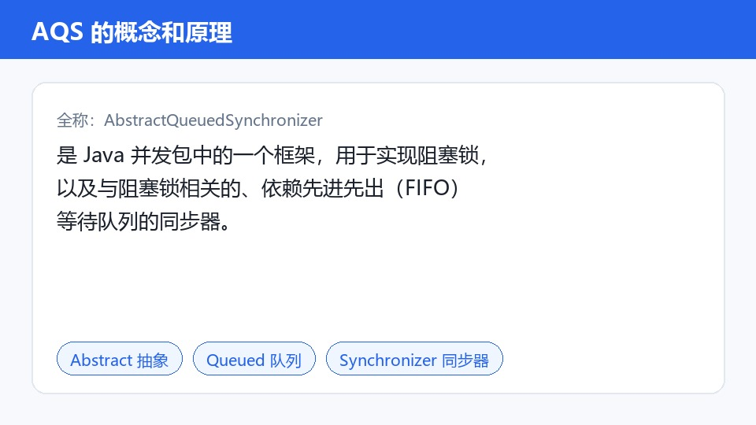
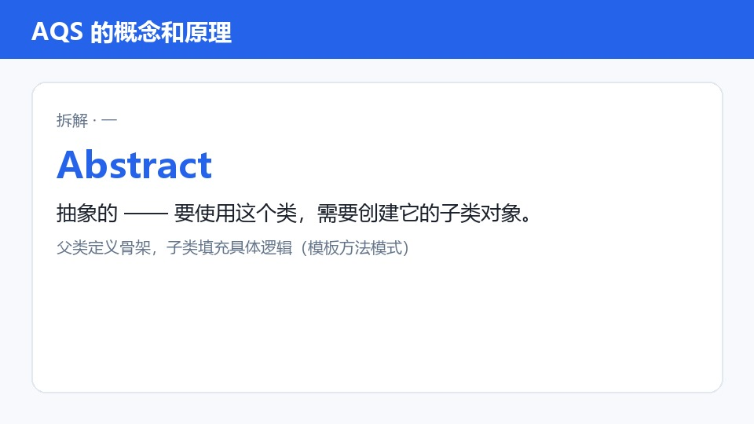
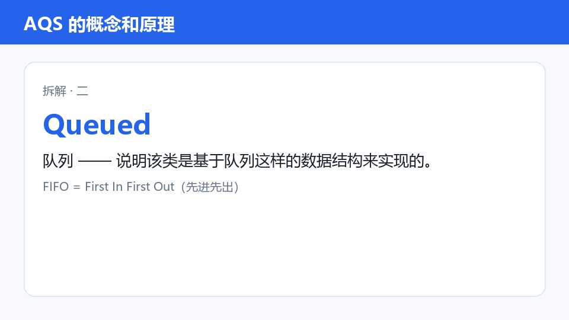
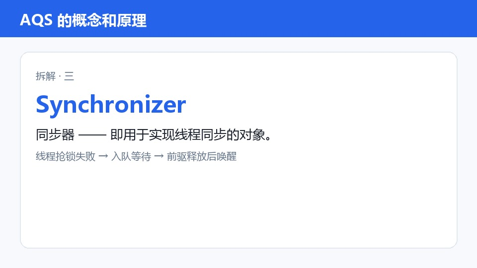

Java并发框架AQS深度解析笔记
🎬 本地视频 · 本地大模型生成 · 全程不出本机 · 点时间戳或截图可跳转视频
💡 导读：本视频系统解析Java并发包核心组件AQS(抽象队列同步器)，解决多线程环境下锁机制实现与线程协调问题。学完可掌握AQS核心概念、两种工作模式、底层实现原理及实际应用场景，为理解ReentrantLock等并发工具奠定理论基础。
1. AQS概念与核心组成 ⏱️ 00:00
- AQS全称AbstractQueuedSynchronizer，是Java并发包(java.util.concurrent.locks)中的核心同步框架
- 它通过维护FIFO等待队列实现线程调度，包含三个核心要素：同步状态(State)、等待队列(Queue)、状态转换机制
- AQS本质是抽象类，需通过继承实现具体同步逻辑，如ReentrantLock的非公平锁实现就继承自AQS
🔎 考点/易混点：注意AQS与synchronized关键字的区别：synchronized是JVM层面的锁机制，AQS是Java代码实现的同步框架
🔍 底层原理 / 延伸：将等待队列比作小区物业接待处的叫号系统。当业主(线程)来办事(请求锁)，先取号(入队)，按顺序叫号(调度)。若当前号(状态)被占用，就排队等待，这对应AQS的FIFO队列机制。
📝 代码说明：AQS核心抽象类定义，包含state状态变量和等待队列
public abstract class AbstractQueuedSynchronizer {
private volatile int state;
private transient Node head;
private transient Node tail;
//...
}

2. AQS的两种工作模式 ⏱️ 04:00
- 排他模式(独占模式)：同一时刻仅允许一个线程持有锁，如ReentrantLock的默认实现
- 共享模式：允许多个线程同时持有锁，典型应用是Semaphore的许可控制
- 两种模式通过state状态值的读写策略区分，排他模式直接操作state，共享模式需处理state的增量/减量
🔎 考点/易混点：注意排他模式与共享模式的兼容性：共享模式获取锁后，排他模式获取会失败，反之亦然
🔍 底层原理 / 延伸：将共享模式类比为图书馆的座位分配。当有10个座位时，多个读者(线程)可同时占用，但超过10人就要排队。这种资源池管理方式对应AQS的共享模式设计。
📝 代码说明：共享模式获取锁的典型实现，通过CAS更新state值
protected final boolean tryAcquireShared(int arg) {
// 实现共享锁获取逻辑
return (getState() < 0) ? 1 : -1;
}

3. AQS底层实现原理 ⏱️ 07:00
- 基于CAS(Compare and Swap)实现状态原子操作，使用Unsafe类直接操作内存
- 线程等待队列采用双向链表结构，每个节点包含线程引用和前驱/后继指针
- 通过park/unpark方法实现线程挂起与唤醒，底层依赖JVM的LockSupport类
🔎 考点/易混点：注意AQS的自旋等待机制：线程在获取锁失败后会进行多次CAS尝试，而非直接阻塞
🔍 底层原理 / 延伸：将线程等待队列比作餐厅的叫号系统。顾客(线程)取号后，服务员(线程调度器)按顺序叫号。若当前号(状态)被占用，顾客就等待，这对应AQS的FIFO队列机制。
📝 代码说明：CAS操作示例，使用Unsafe类更新state状态
private final boolean compareAndSetState(int expect, int update) {
return unsafe.compareAndSwapInt(this, stateOffset, expect, update);
}

4. AQS在并发工具中的应用 ⏱️ 08:00
- ReentrantLock通过继承AQS实现可重入锁功能，维护锁计数器和持有线程标识
- Semaphore通过AQS实现资源许可管理，共享模式下允许指定数量的线程同时访问
- CountDownLatch通过AQS实现线程等待/通知机制，基于状态值的递减操作
🔎 考点/易混点：注意不同并发工具的实现差异：ReentrantLock支持公平/非公平锁，Semaphore支持资源池，CountDownLatch是一次性触发
🔍 底层原理 / 延伸：将CountDownLatch类比为考试倒计时。当倒计时归零时，所有等待的考生(线程)同时获得考试资格，这种一次性触发机制对应AQS的条件队列设计。
📝 代码说明：CountDownLatch的await方法实现，通过AQS等待状态值
public void await() throws InterruptedException {
sync.acquireSharedInterruptibly(1);
}

📊 知识小结
| 知识点 | 核心内容 | 考点/易混点 | 难度 |
|---|
| AQS定义 | Java并发包核心同步框架，通过FIFO队列和状态管理实现线程协调 | 区分AQS与synchronized关键字的区别 | ★★★★ |
| 工作模式 | 支持排他模式(独占)和共享模式，分别对应互斥锁和资源池 | 理解两种模式的兼容性限制 | ★★★ |
| 底层机制 | 基于CAS原子操作和LockSupport实现线程挂起/唤醒，使用双向链表管理等待队列 | 掌握park/unpark与线程状态转换关系 | ★★★★★ |
| 应用场景 | ReentrantLock、Semaphore、CountDownLatch等并发工具的底层实现基础 | 区分不同并发工具的AQS实现差异 | ★★★ |
❓ 自测题
Q：AQS框架的核心组成部分不包括以下哪个选项？
A：A. 状态机 B. 等待队列 C. 线程池 D. CAS操作
答案：C
Q：在AQS中，共享模式与排他模式的主要区别是什么？
A：A. 共享模式允许线程同时访问资源
B. 排他模式支持锁重入
C. 共享模式使用不同的状态管理策略
D. 以上都是
答案：D
Q：下列哪种并发工具的实现不依赖AQS？
A：A. ReentrantLock B. CyclicBarrier C. Semaphore D. CountDownLatch
答案：B